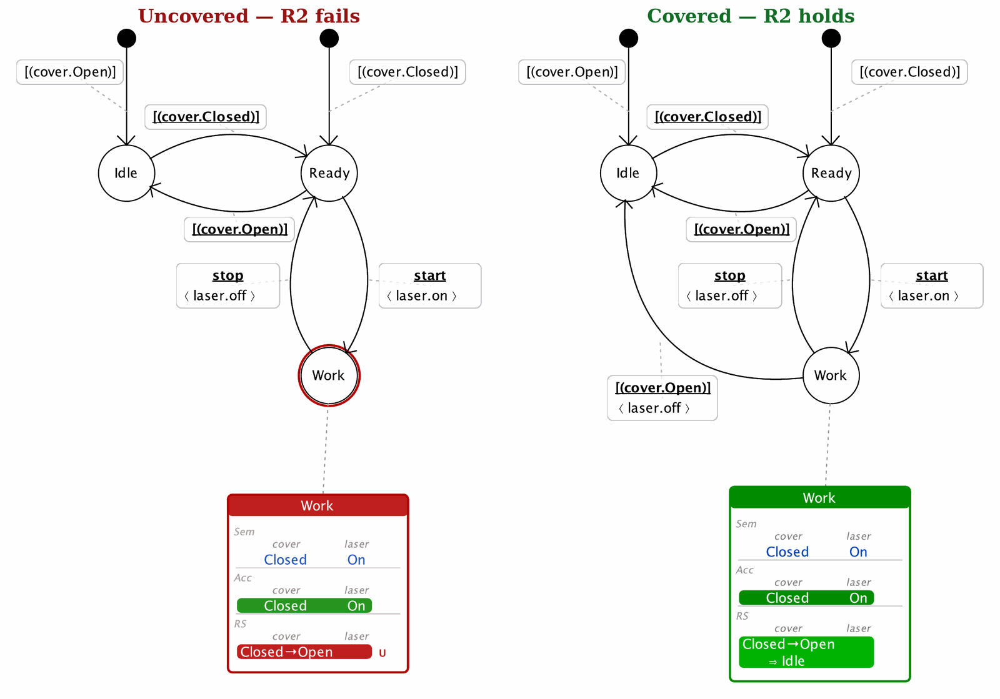
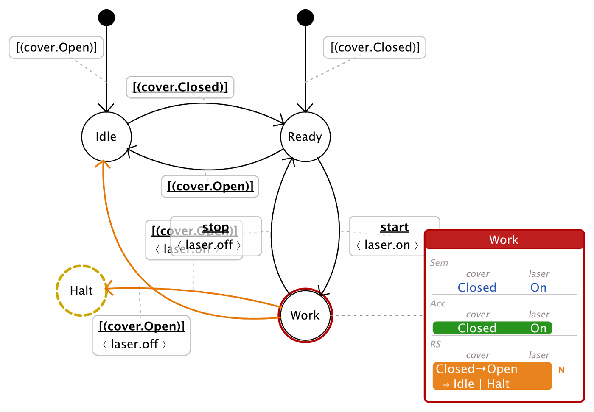
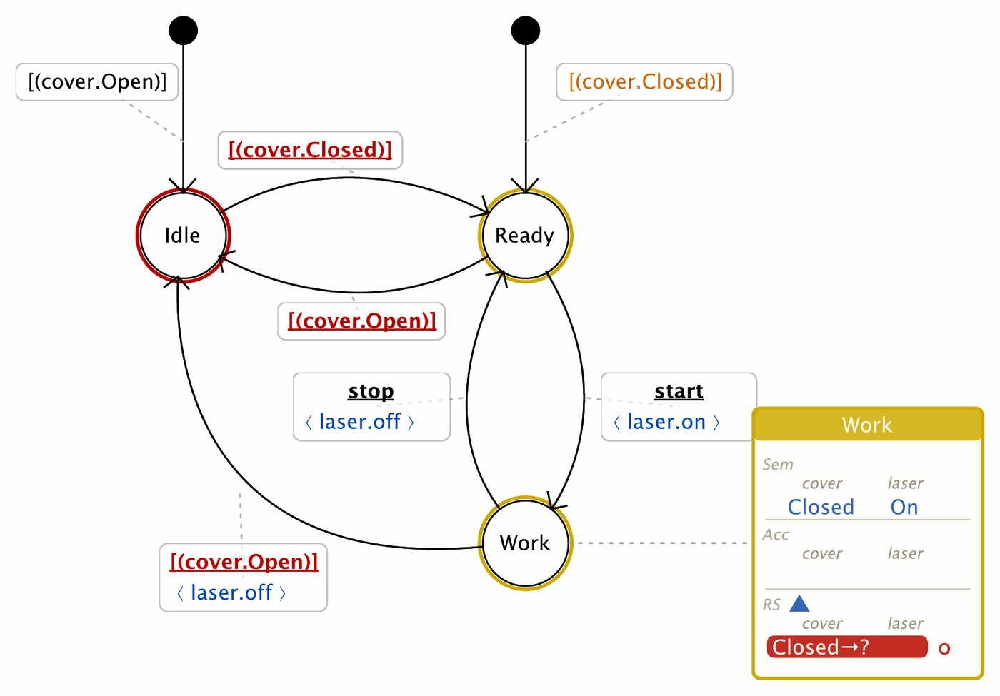

The second companion note follows the direction opposite to the first. Where File 1 traced semantics into a state through its incoming transitions, this one asks what a state must do when the Assembly slips out of its semantics on its own. Part IV, §3 computed the reactive space RS(s)—the exit zones, the autonomous successors that leave Sem(s). Three rules govern the controller's answer: R2 (every exit zone is covered), R3 (covered unambiguously) and R4 (no stale exit zones). Together they turn the vague duty "handle autonomous behaviour" into a finite, checkable one.
An exit zone of s is a configuration reached from a currently reachable, in-domain configuration by a single autonomous step, and landing outside Sem(s)—Part IV, §3. It is not an error but an obligation: a boundary condition the controller is required to answer. Part III, Figure 5.1 showed the answer as a second move between possible worlds—a spontaneous autonomous step out of the semantics, followed by an induced guard-triggered reaction that restores consistency.
This is the mirror image of File 1. There, incoming transitions build a state's semantics; here, outgoing autonomous transitions threaten it and outgoing reactive transitions defend it. A reaction is itself a guard-triggered transition: its guard is the exit-zone condition, and it may carry an action that repairs the configuration on the way out. The three rules of this note simply count and constrain those reactions—how many an exit zone must have, and whether the exit zone is real (Figure 1).
(Open, On). Left: no autonomous reaction covers it—R2 fails, the boundary is unanswered. Centre: exactly one reaction, to Idle under [cover.Open]—R2 and R3 both hold. Right: two competing reactions from the same exit zone—R2 is satisfied but R3 fails, because the controller's response is now ambiguous. Coverage asks for at least one; determinism asks for at most one.R2 — Exit-zone coverage. Every external exit zone of s—every element of RS(s)—is covered by at least one enabled autonomous reaction.
An exit zone is not a possibility the controller may ignore: autonomous evolution will reach it, sooner or later, because the components move on their own. If no reaction is in place, the moment the Assembly steps into the exit zone the controller state and the actual configuration part ways—and, with nothing to move the controller, they stay parted. Coverage is what guarantees a way back: at least one enabled reaction that carries the Assembly into a state whose semantics admits the new configuration. Where Sem(s) encodes safety, an uncovered exit zone is precisely an unsafe boundary the controller cannot leave.
The qualifier external is what makes the obligation finite and honest. An external exit zone starts from a currently reachable configuration that satisfies the state's constraints and reaches a target outside the constraint domain; drift that stays inside the reachable, in-domain configurations is internal and carries no obligation. R2 is about coverage, not uniqueness—"covered" means "handled at least once".
Failure mode. Uncovered exit zone — an external exit zone with no enabled autonomous transition covering its target. The exit-zone row is shown red, the dashboard header turns problematic, and the state is listed under Uncovered Exit Zones—except on fail states, where the check is masked (see File 3, R8).
In PWSEditor. Exit zones appear as rows in the state dashboard; external, uncovered ones are red. A covering reaction is added directly by an autonomous guard-triggered transition (Cmd/Ctrl + drag from the source state), and the autonomous-guard popup offers exactly the eligible exit-zone targets—so the natural gesture also produces a valid guard. Once a target is covered, its row turns green. The obligation is aggregated in the Controller Report under Uncovered Exit Zones.
Micro-example. In Work, with Sem(Work) = {(Closed, On)}, the cover may open autonomously, so RS(Work) = {(Open, On)}. Left alone, that row is red and Work is not well-formed. Adding the fail-safe reaction Work → Idle with guard [cover.Open] and action ⟨laser.off⟩ covers the exit zone; the row turns green (this is Part IV, Figure 3.1).

Work the cover may open autonomously, so RS(Work) contains the external exit zone Closed → Open (reaching (Open, On)). With no reaction in place the row is red and tagged U, Work's ring turns red, and the state is listed under Uncovered Exit Zones—R2 fails. Right (covered). Adding the fail-safe reaction Work → Idle with guard [cover.Open] and action ⟨laser.off⟩ answers the boundary: the RS row becomes green and reads Closed → Open ⇒ Idle, Work's ring returns to normal, and R2 holds. (This is Part IV, Figure 3.1.)R3 — Reaction determinism. No exit zone enables more than one competing autonomous reaction. Coverage (R2) guarantees a reaction exists; determinism guarantees it is unambiguous.
Autonomous reactions are not chosen by an event the designer controls—they fire on the Assembly's own moves. If a single exit zone enables two autonomous reactions leading to different states, the controller's response to that boundary condition is ambiguous: two futures are equally admissible, and the model no longer describes a single behaviour. R2 and R3 are the two halves of a single well-posed answer—at least one reaction so the boundary is handled, and at most one so the handling is determinate.
Failure mode. Two enabled autonomous transitions from the same source cover the same exit-zone target. Coverage still holds—the boundary is handled—so the symptom is subtler than an uncovered zone: the danger is not a gap but a fork.
In PWSEditor. Determinism is enforced by prevention rather than by a report entry. The autonomous-guard popup hides exit-zone targets already handled by another enabled autonomous transition from the same source, so a duplicate reaction is hard to create in the standard workflow. There is currently no separate Controller-Report section flagging autonomous duplicate coverage as a distinct issue—so, unlike R2, R3 is a discipline the editor maintains for you rather than a line in the report. Advanced editing that bypasses the popup can still create a fork, which is why the rule is worth stating explicitly.
Micro-example. Suppose Work already covers (Open, On) with Work → Idle [cover.Open]. Adding a second autonomous transition Work → Halt [cover.Open] covering the same exit zone leaves R2 satisfied but violates R3: on the cover opening, the controller could go to either Idle or Halt. The standard popup would not have offered Halt as a target, precisely to keep the reaction unique.

Work's exit zone Closed → Open is covered by two autonomous reactions with the same guard [cover.Open]: Work → Idle and Work → Halt. Coverage (R2) is satisfied, but determinism (R3) fails: on the cover opening the controller could go to either target. PWSEditor draws the two competing transitions in orange and marks the RS row Closed → Open ⇒ Idle | Halt with the N (nondeterministic) badge. (Halt is drawn as a fail sink so its own deadlock is masked—see R8—keeping the focus on the conflict at Work.)R4 — No orphan exit zones. No exit zone refers to a component source state that no longer exists in the Assembly. An orphan exit zone is stale structure left by a model change, and must be removed rather than left uncovered.
An exit zone is defined relative to a component transition—an autonomous step from a specific component source state. Edit the Assembly (delete a component state, rename it, restructure a machine) and an exit zone that referred to the old state can survive as a stale reference: it no longer corresponds to any boundary the Assembly can actually cross. This is a different failure from R2. An uncovered exit zone is real but unhandled; an orphan exit zone is no longer real. Covering it would be meaningless—there is nothing to react to—so the remedy is to remove or repair the stale reference, usually by fixing the model that drifted underneath it.
Failure mode. Orphan exit zone — the exit zone's component source state is missing after a structural change. The row is shown red and the state's status is problematic, but the fix is deletion/repair, not a new reaction.
In PWSEditor. Orphan exit zones are shown red like uncovered ones, but the Controller Report keeps them in a separate Orphan Exit Zones section, precisely so the two are not confused: one calls for a reaction, the other for cleanup. Internal (grey) exit zones, by contrast, are excluded from these obligations altogether—they are shown for explanation, not enforcement.
Micro-example. Suppose the cover machine is refactored and its Closed state is replaced by a differently named state. An exit zone that was computed against the old Closed transition now points at a source state the Assembly no longer has: it becomes orphan. No autonomous reaction can sensibly cover it; the correct move is to recompute against the new machine and drop the stale zone.

cover machine's Closed state has been removed, so every controller reference to cover.Closed—guards and constraints—is now dangling: PWSEditor draws those guards red, and Work's dashboard shows the exit zone as Closed → ? tagged O (orphan), its source state no longer present in the Assembly. An orphan zone cannot sensibly be covered; the fix is to recompute against the current machine and drop the stale reference (here, the states that depended on Closed also fall unreachable).If File 1's workflow was a round trip between an annotation editor and a dashboard, File 2's is a reading of the exit-zone rows followed by the addition of reactions until they clear:
Cmd/Ctrl + drag). The popup offers only eligible targets, and hides those already handled—so the same gesture that covers the zone (R2) also keeps the reaction unique (R3).⟨laser.off⟩ as a fail-safe). The zone turns green.Part VI walks the Cover–Laser controller through exactly this: its Figures show the exit-zone rows turning from red to green as each reaction is added, and the state dashboards moving to well-formed. Here the point is the counterpart to File 1: instead of building semantics from incoming transitions, you defend it with outgoing autonomous ones—covering every boundary once, and only the boundaries that are real.
The final companion note closes the loop begun here: once every state is reachable and no configuration can get stuck—Keeping the controller alive: reachability, deadlock, and the fail-safe exception (rules R7–R8)—the reactions of this note are what an exit into a fail-safe sink actually relies on.